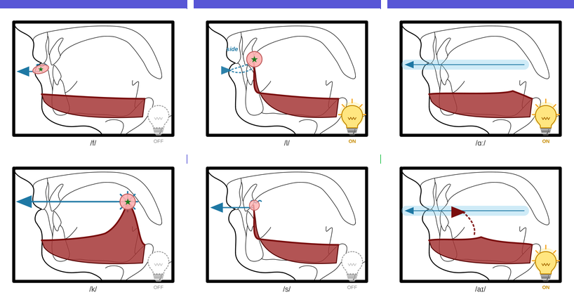
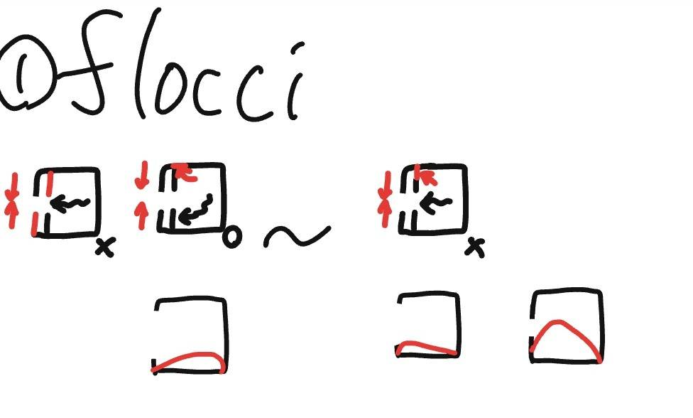
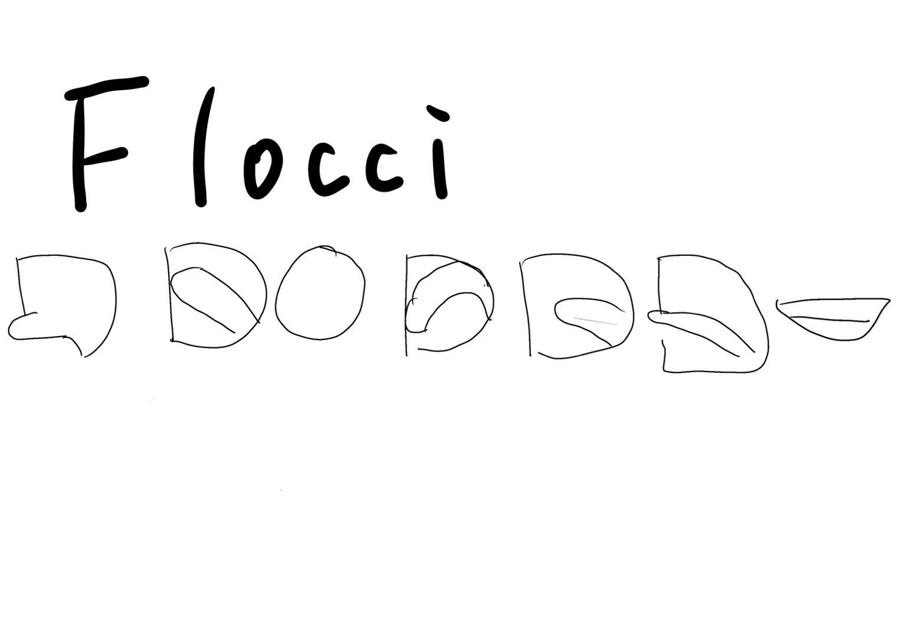
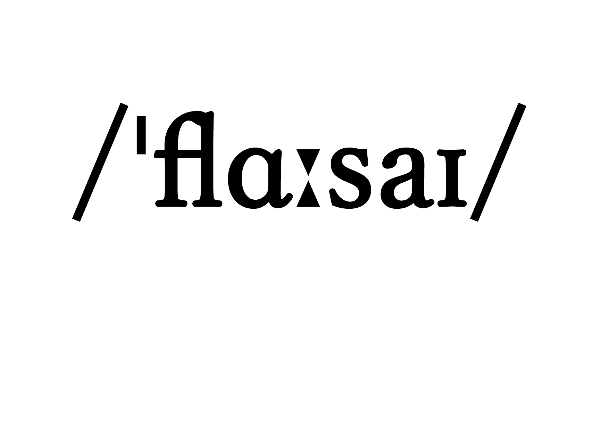

記号を見て発音するだけ！約7分で完了。あなたの参加が研究データになります🎉
⏱ 所要時間：約7分 🤫 静かな場所で行ってください
発表会のスクリーンに表示されます ✨
あなたのグループ
英語の発音記号には IPA（国際音声記号）という種類がありますが、
日本語話者には難しいと言われています。
この研究では「もっとわかりやすい記号を作れるか？」を調べています。
短く何か話して、自分の声が聞こえるか確認してください。
うまくなくてOK！まず挑戦してみよう
この記号を見ながら最後の練習をします
Flocciの記号例を参考に選んでください




記号を参考に何度でも練習OK！準備できたら録音しよう
記号画像を読み込み中…
発音しやすかった順に1〜4位をつけてください
タップすると順位が付きます。同じところをもう一度タップすると以降がリセットされます。
研究の分析に使います。答えやすいものを選んでください。
録音データをアップロードしています。
そのままお待ちください。
あなたのニックネーム：
5月23日 湘南アイパーク発表会で表示されます ✨